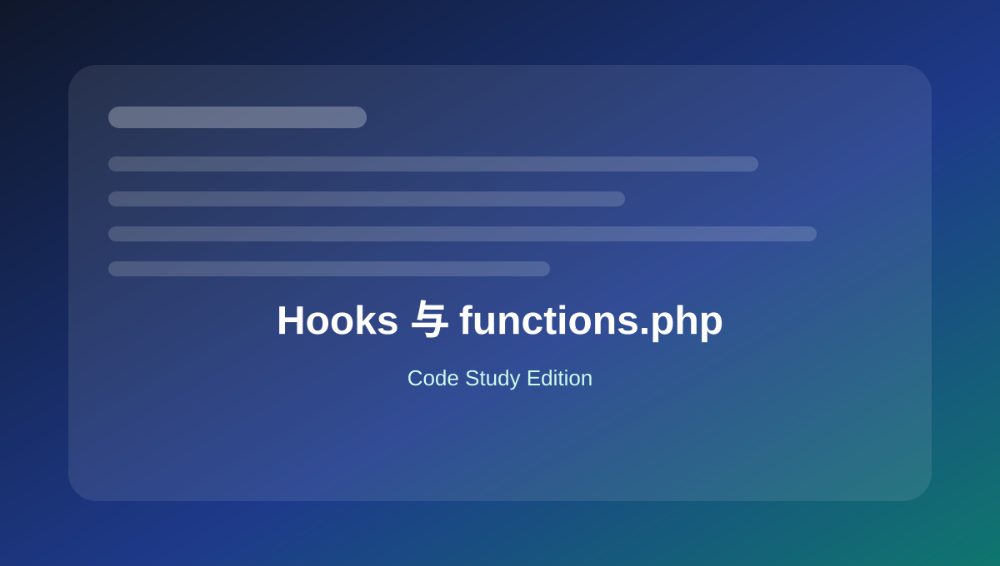

01 Hooks 与 functions.php
系统理解 action、filter、优先级、参数数量、移除 hook 和自定义 hook。

本页关键词
add_action
add_filter
priority
accepted_args
do_action
apply_filters
学习目标
- 理解 action 和 filter 的区别
- 知道优先级和参数数量如何影响执行
- 会写自定义 hook 方便后续扩展
- 知道如何移除已经注册的 hook
代码使用提醒
本页代码适合用于学习和研究。复制到正式网站前，请先备份，并优先在测试环境验证。
涉及用户输入、后台保存、接口请求、删除操作和邮件发送时，要同时考虑权限、nonce、sanitize、validate 和 escape。
1. Action：在 init 阶段注册逻辑
基础
<?php
function mysite_register_features() {
// 适合注册 CPT、taxonomy、rewrite 等。
}
add_action( 'init', 'mysite_register_features' );
Action 是“到某个时机执行我的函数”。
2. Filter：修改文章标题
基础
<?php
function mysite_add_title_suffix( $title, $post_id ) {
if ( is_admin() ) {
return $title;
}
return $title . ' | EVODEK';
}
add_filter( 'the_title', 'mysite_add_title_suffix', 10, 2 );
Filter 必须返回修改后的值。这里 accepted_args 为 2，所以回调接收两个参数。
3. Hook 优先级：控制执行顺序
进阶
<?php
function mysite_early_task() {
// 更早执行
}
add_action( 'wp_enqueue_scripts', 'mysite_early_task', 5 );
function mysite_late_task() {
// 更晚执行
}
add_action( 'wp_enqueue_scripts', 'mysite_late_task', 30 );
数字越小越早执行；相同优先级按注册顺序执行。
4. 移除 hook：取消某个回调
进阶
<?php
function mysite_remove_parent_theme_feature() {
remove_action( 'wp_footer', 'parent_theme_footer_credit' );
}
add_action( 'after_setup_theme', 'mysite_remove_parent_theme_feature', 20 );
remove_action 的 hook、函数名、优先级必须和添加时一致。
5. 自定义 action：给自己的代码留扩展点
进阶
<?php
function mysite_render_product_card() {
echo '<article class="product-card">';
do_action( 'mysite_before_product_card_content' );
echo '<h3>Product Title</h3>';
do_action( 'mysite_after_product_card_content' );
echo '</article>';
}
function mysite_add_badge() {
echo '<span class="badge">New</span>';
}
add_action( 'mysite_before_product_card_content', 'mysite_add_badge' );
自定义 action 方便后期在不改原函数的情况下插入内容。
6. 自定义 filter：让文字可被二次修改
进阶
<?php
function mysite_get_cta_text() {
$text = 'Learn More';
return apply_filters( 'mysite_cta_text', $text );
}
function mysite_change_cta_text( $text ) {
return 'Get a Free Quote';
}
add_filter( 'mysite_cta_text', 'mysite_change_cta_text' );
apply_filters 会把默认值交给外部回调修改。
本页总结
Hooks 是 WordPress 代码体系的核心。熟练掌握 add_action、add_filter、优先级、参数和自定义 hook，后续主题和插件开发都会更清晰。